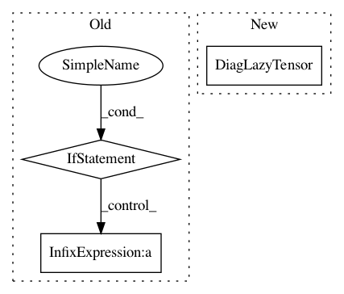

8980e38f13ced2629631af68bff4f1e6ecbb97b3,gpytorch/likelihoods/gaussian_likelihood.py,GaussianLikelihood,pyro_sample_y,#GaussianLikelihood#Any#Any#Any#Any#,56
Before Change
y_lazy_covar = add_diag(lazy_covar_f, noise)
y_mean = variational_dist_f.mean
y_dist = MultivariateNormal(y_mean, y_lazy_covar)
if len(y_dist.shape()) > 1:
pyro.sample(name_prefix + "._training_labels", y_dist.independent(1), obs=y_obs)
else:
pyro.sample(name_prefix + "._training_labels", y_dist, obs=y_obs)
After Change
y_mean = variational_dist_f.mean
if y_mean.dim() == 1:
noise = noise.squeeze(0)
y_lazy_covar = DiagLazyTensor(var_f + noise.expand_as(var_f))
y_dist = MultivariateNormal(y_mean, y_lazy_covar)
pyro.sample(name_prefix + "._training_labels", y_dist, obs=y_obs)
In pattern: SUPERPATTERN
Frequency: 4
Non-data size: 3
Instances
Project Name: cornellius-gp/gpytorch
Commit Name: 8980e38f13ced2629631af68bff4f1e6ecbb97b3
Time: 2018-11-12
Author: gpleiss@gmail.com
File Name: gpytorch/likelihoods/gaussian_likelihood.py
Class Name: GaussianLikelihood
Method Name: pyro_sample_y
Project Name: cornellius-gp/gpytorch
Commit Name: 198493be78000034e4ce36d846bda0a82fd0779f
Time: 2021-01-16
Author: balandat@fb.com
File Name: gpytorch/lazy/diag_lazy_tensor.py
Class Name: DiagLazyTensor
Method Name: _mul_matrix
Project Name: cornellius-gp/gpytorch
Commit Name: 9233f51a05def9f3b2106231f7089295fb205ddc
Time: 2019-04-15
Author: gpleiss@gmail.com
File Name: gpytorch/variational/whitened_variational_strategy.py
Class Name: WhitenedVariationalStrategy
Method Name: forward
Project Name: cornellius-gp/gpytorch
Commit Name: 44826d877d755e7df1d681d680583911d6d2032e
Time: 2019-04-15
Author: balandat@fb.com
File Name: gpytorch/variational/whitened_variational_strategy.py
Class Name: WhitenedVariationalStrategy
Method Name: forward